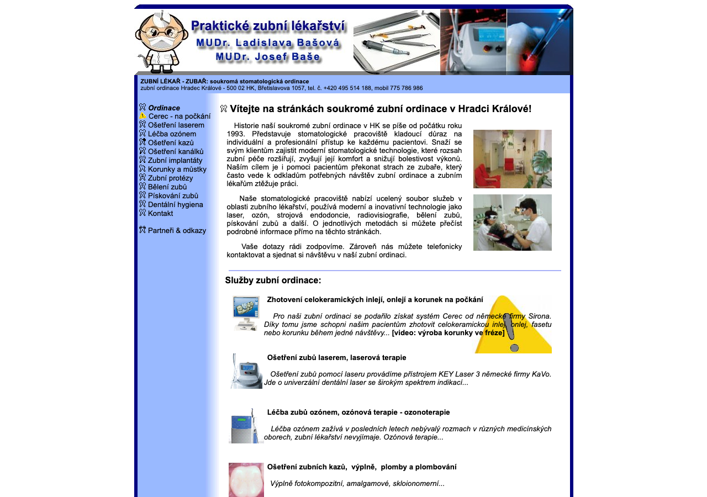
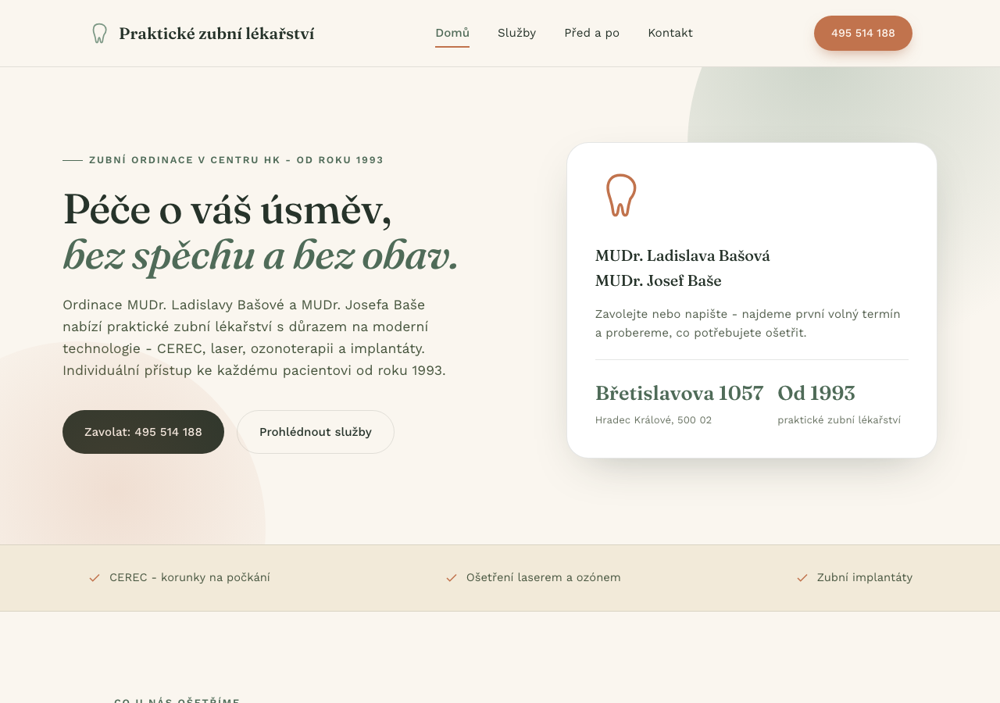
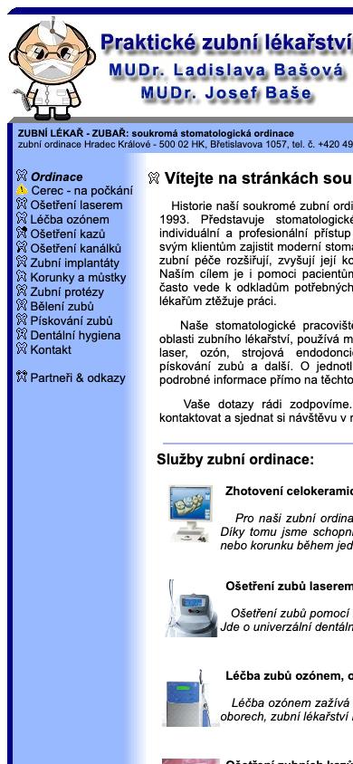
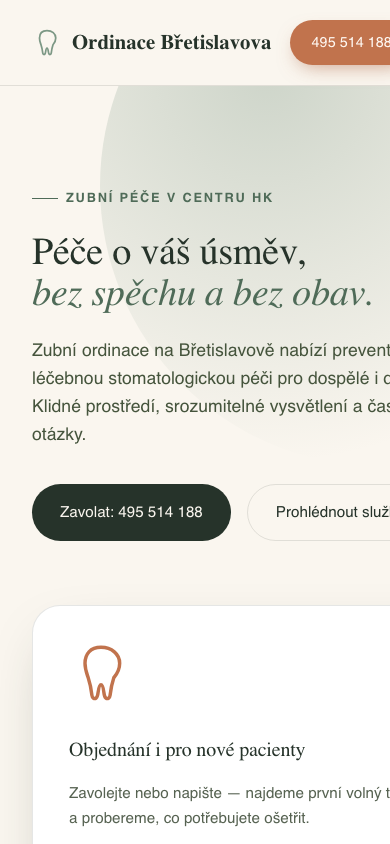

Screenshoty aktuálního webu ordinace (zubni-lekar-zubar.cz) vedle návrhu nového webu. Obojí je reálný snímek obrazovky, ne kresba.

zubni-lekar-zubar.cz — tabulkový layout, bez zabezpečeného HTTPS, bez mobilní optimalizace.

Návrh: čitelná typografie, jasná struktura, kontaktní údaje na první pohled.
Většina lidí dnes hledá zubaře přes telefon — takhle vypadá stejná stránka na mobilním displeji.

